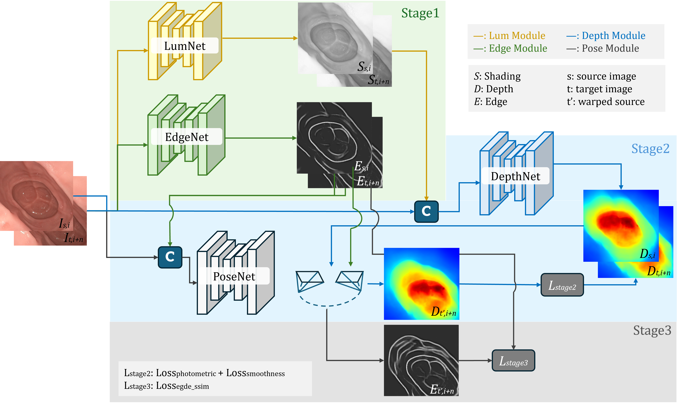

Luminance-aware depth
IID-derived illumination complements RGB appearance for monocular depth estimation.
Multi-modal self-supervised learning
Multi-Modal Monocular Endoscopic Depth and Pose Estimation with Edge-Guided Self-Supervision
Approach
PRISM routes RGB and luminance to DepthNet, while RGB and edge maps guide PoseNet. The released preprocessing pipeline reproduces both auxiliary modalities.

IID-derived illumination complements RGB appearance for monocular depth estimation.
Structural edge cues improve motion learning in challenging endoscopic imagery.
Public split manifests, preprocessing commands, configuration files, and checkpoint hashes.
Qualitative comparison
Input video and predicted depth from PRISM and representative self-supervised baselines.
Citation
@article{ju2026prism,
title = {Multi-modal monocular endoscopic depth and pose estimation
with edge-guided self-supervision},
author = {Ju, Xinwei and Daher, Rema and Stoyanov, Danail
and Bano, Sophia and Vasconcelos, Francisco},
journal = {International Journal of Computer Assisted Radiology and Surgery},
year = {2026},
doi = {10.1007/s11548-026-03669-1}
}